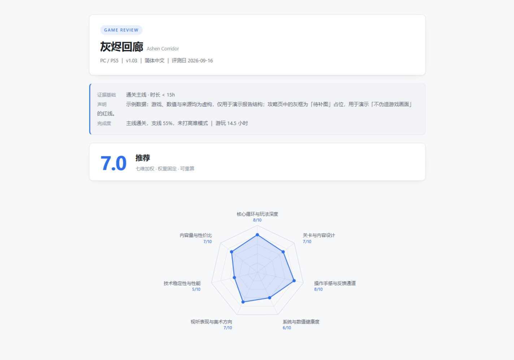

固定权重、脚本算分、E1–E5 证据分级。没有证据的关卡细节一个字都不写； 拍不到的图留「待补图」占位框，而不是拿 AI 图冒充游戏画面。

七维加权评分、雷达图、每维度加分/扣分锚点、证据基础声明、公正性自查与来源清单。
主线路线图、卡关点、BOSS 阶段表、隐藏要素四层结构；未验证内容单独进清单，不混进正文步骤。
普通 AI 评测的问题不是文笔，而是你无法判断哪句话有依据。这个 skill 把「可信」拆成了三个可检查的机制。
七维权重全局固定，总分由 build_report.py 计算；换人、换模型、换时间，同一份证据得到同一个分。
E1 亲验、E2 素材、E3 有源、E4 推断、E5 未知。E3 必须给可点来源，E4/E5 必须写清怎么验证。
无证据的走位、数值、隐藏要素不写成步骤；拍不到的图渲染成「待补图」占位框，并写明怎么拍到。
extract_frames.py 从录像抽帧，占位框会被真实截图替换。